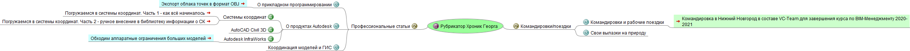

Рубрикатор Хроник Георга

Рубрикатор Хроник Георга
Профессиональные статьи
О прикладном программировании
Экспорт облака точек в формат OBJ
Преобразовываем поверхность LandXML в IFC
О продуктах Autodesk
Системы координат
Погружаемся в системы координат. Часть 1 - как всё начиналось
Погружаемся в системы координат. Часть 2 - ручное внесение в библиотеку информации о СК
Погружаемся в системы координат. Часть 3 - нестандартные виды определений СК
Погружаемся в системы координат. Часть 4 - автоматизация формирования библиотеки СК
Погружаемся в системы координат. Часть 5 - стандартные инструменты пересчета координат
Погружаемся в системы координат. Часть 6 - автоматизация пересчета координат
AutoCAD Civil 3D
Civil 3D - Получаем рельеф для произвольной местности со спутниковых снимков
Civil 3D - подключаемся через WMS к другим картам
Civil 3D. Задаем поверхности текстуру из фотографии
Civil 3D. Координация данных с помощью запросов Map 3D
Autodesk InfraWorks
Обходим аппаратные ограничения больших моделей
Координация моделей и ГИС
В мире open-source. SAS.Планета - краткий обзор программы
NextGIS
NextGIS. Первые шаги. Часть 1 - прямое геокодирование улиц
Обзор других продуктов
В мире open-source. MeshLab - обзор программы в контексте задач по обработке данных фотограметрии и облаков точек
IFC
XBim
В мире open-source. Xbim Toolkit. Часть 1. Краткое введение в пакет (Xbim Essentials, Xbim Xplorer)
В мире open-source. Xbim Toolkit. Часть 2. Создание и валидация файла IFC (Xbim Essentials, Xbim Xplorer)
Облака точек и работа с ними
Облака точек для задач инфраструктуры. Часть 1 - предобработка и растеризация
Командировки/поездки
Командировки и рабочие поездки
Командировка в Нижний Новгород в составе VC-Team для завершения курса по BIM-Менеджменту 2020-2021
Свои вылазки на природу
[Архив] Пеший поход на озеро Победное. Осень 2020
Велопоездки
Велопоездка в Кавголово
Велопоездка в Кавголово (14.06.2021). Часть 1
Велопоездка в Кавголово (14.06.2021). Часть 2
Велопоездка в Кавголово (14.06.2021). Часть 3